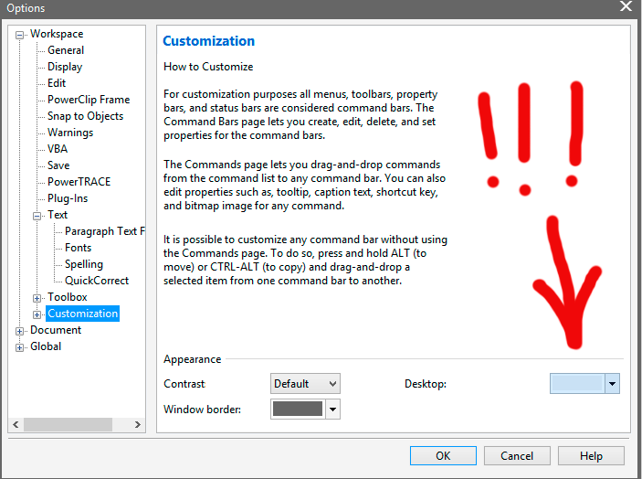

цвет рабочего пространства – как поменять?
8old / 23.12.2014, 12:41
Форум:
Версия программы:
16.3.0.1114 (sp3)
Друзья, возможно ли поменять цвет рабочего пространства, т.е. не страницы, а всего пространства на другой цвет/тон по аналогии с тем, как это выглядит в Иллюстраторе? В Инструментах > Параметрах цветопробы есть пункт "Цвета пробы", его активация делает раб. пространство светло-голубым, однако нужно темнее. Как сделать?
Поясню суть вопроса: после 15 лет работы на 19 дюймовых мониторах я пересел за монитор в 30 дюймов. При всех его плюсах, обнаружилась спецефическая проблема – огромное светлое поле слепит и очень утомляет. Прошел месяц пользования, адаптироваться не смог.
как вариант, можно в настройках задать цвет фона для страницы и отмасштабировать страницу на весь экран
есть макрос Макрос BDGreyDesktop, но с недостатками указанными в комментах, а также непонятно, что делать с этим прямоугольником при экспорте например
в версии Х7.3 появилась штатная настройка - официально доступная не всем,
но решаемая с помощью реестра - дочитайте до конца
Вообще то в Х7.2 и доступна она через настройки:
Друзья, Всем Огромное Спасибо!
Узнав сегодня, что такая функция стала штатной в х7, теперь думаю о переходе на эту версию.
Узнав сегодня, что такая функция стала штатной в х7, теперь думаю о переходе на эту версию.
Функция в х7 действительно есть, но чтобы ей воспользоваться нужно внести правку в реестр операционки
следующим образом:
- набрать в строке поиска - regedit.exe
- выбрать путь: HKEY_CURRENT_USER\Software\Corel\CorelDRAW\17.0\Draw\Application Preferences\WindowScheme
- открыть параметр - PageMatColor
- изменить значение default на 14277081 (светло-серый)
- запустить Corel
ЗЫ)) При смене рабочего пространства данную процедуру повторить.

Способ приведенный на изображении выше работает только у зарегистрированных членов сообщества Corel. Для тех у кого нет возможности оплачивать "бонусы" добро пожаловать в реестр windows!